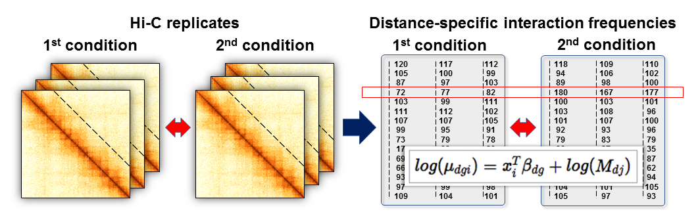

Detection of Differentially Interacting Chromatin Regions From Multiple Hi-C Datasets
Source:vignettes/hic_tutorial.Rmd
hic_tutorial.RmdNecessary packages
# Install, if necessary, and load necessary libraries and set up R session if (!requireNamespace("BiocManager", quietly = TRUE)) install.packages("BiocManager") library(readr) # install.packages("readr") library(data.table) # install.packages("data.table") library(dplyr) # install.packages("dplyr") library(edgeR) # BiocManager::install("edgeR") library(BiocParallel) # BiocManager::install("BiocParallel") library(HiCcompare) # BiocManager::install("HiCcompare"), or, for the latest version, # install.packages("devtools") # devtools::install_github('dozmorovlab/HiCcompare', build_vignettes = TRUE, force = TRUE) library(multiHiCcompare) # BiocManager::install("multiHiCcompare", version = "devel") # Output fixed numbers, not scientific notation. Needed for the correct # representation of genomic coordinates options(scipen = 999)
Hi-C data formats
Like most sequencing data, Hi-C data starts out as paired-end reads stored in FASTQ format. The fastq files can be very large, depending on the depth of the sequencing. Several Hi-C data processing pipelines exist to convert raw Hi-C FASTQ reads into text-based chromatin interaction matrices (Ay and Noble 2015). Researchers looking to generate their own Hi-C matrices will need to familiarize themselves with the Hi-C data processing pipelines (Lajoie, Dekker, and Kaplan 2015). However, those interested in using the wide range of public Hi-C data deposited on Gene Expression Omnibus (GEO) repositories can frequently bypass the data processing steps, as most deposited Hi-C data also includes the processed chromatin interaction matrices. These matrices are typically stored in the text-based .hic or HDF5-based .cool formats developed by Aiden lab (http://aidenlab.org/data.html) and Mirny lab (ftp://cooler.csail.mit.edu/coolers), respectively, and can be converted to plain text files. For more information, see Stansfield et al. 2019, “R Tutorial: Detection of Differentially Interacting Chromatin Regions From Multiple Hi-C Datasets” (Stansfield et al. 2019), and the vignettes for the HiCcompare, multiHiCcompare, SpectralTAD and TADCompare R/Bioconductor packages.
Working with \(n \times n\) matrices
\(n \times n\) contact matrices are the most intuitive format to represent chromosome-specific chromatin interactions. The genome (and each chromosome) is binned into a set of non-overlapping regions of fixed size \(r\). \(r\) corresponds to the resolution of Hi-C data; typical resolution includes 10kb, 25kb, 50kb, 100kb, and 1Mb data.
\(n \times n\) contact matrices are square and symmetric with entry \(ij\) corresponding to the number of contacts between region \(i\) and region \(j\). Below is an example of a \(75 \times 75\) region of a contact matrix derived from Rao et al. 2014 data, GM12878 cell line (Rao et al. 2014), chromosome 22, 50kb resolution. Note the symmetry around the diagonal - the typical shape of chromatin interaction matrix. The figure was created using the pheatmap package. \(n \times n\) are most commonly associated with data from the Bing Ren lab (http://chromosome.sdsc.edu/mouse/hi-c/download.html).

Working with \(n \times (n+3)\) matrices
\(n \times (n+3)\) matrices consist of an \(n \times n\) matrix but with three additional leading columns containing the chromosome, the start of the region and the end of the region. Regions in this case are determined by the resolution of the data. These matrices are commonly associated with the TopDom TAD caller (http://zhoulab.usc.edu/TopDom/). The subset of a typical \(n \times (n+3)\) matrix is shown below.
chr start end X18500000 X18550000 X18600000 X18650000
1 chr22 18500000 18550000 13313 4817 1664 96
2 chr22 18550000 18600000 4817 15500 5120 178
3 chr22 18600000 18650000 1664 5120 11242 316
4 chr22 18650000 18700000 96 178 316 162Working with sparse 3-column matrices
Sparse 3-column matrices are matrices where the first and second columns refer to region \(i\) and region \(j\) of the chromosome, and the third column is the number of contacts between them. This style is becoming increasingly popular and is associated with raw data from Lieberman-Aiden lab (e.g., https://www.ncbi.nlm.nih.gov/geo/query/acc.cgi?acc=GSE63525), and is the data output produced by the Juicer tool (Durand et al. 2016). 3-column matrices are handled internally in the package by converting them to \(n \times n\) matrices using the HiCcompare package’s sparse2full() function. The first 5 rows of a typical sparse 3-column matrix are shown below.
region1 region2 IF
1: 16050000 16050000 12
2: 16200000 16200000 4
3: 16150000 16300000 1
4: 16200000 16300000 1
5: 16250000 16300000 1
6: 16300000 16300000 10Working with processed Hi-C data
The HiCcompare R package was designed for working with processed Hi-C data in text format, typically, sparse matrices. Hi-C data in sparse upper triangular matrix format extracted from .hic files can be loaded using standard R functionality. HiCcompare can then be used to convert this Hi-C data into a full \(n \times n\) contact matrix using the sparse2full function. This process can be reversed using the full2sparse function.
Data aligned by HiC-Pro can be converted into a more usable BEDPE format using the hicpro2bedpe function. The hicpro2bedpe function takes the .matrix and .bed files produced by HiC-Pro as input and creates a sparse upper triangular matrix containing start and end coordinates for each interacting region.
Obtaining and preparing the data
Public Hi-C data is available from several sources. GEO (https://www.ncbi.nlm.nih.gov/geo/) catalogs the data for many studies. A search for “Hi-C” returns 3,703 hits (as of July 13, 2020). Additionally, the Aiden Lab website (https://www.aidenlab.org/) lists many high-quality datasets. Finally, there is the cooler repository (https://github.com/mirnylab/cooler), which provides a database of Hi-C data ready for download. More Hi-C studies and data can be found in our GitHub repository (https://github.com/mdozmorov/HiC_data).
First, we will need to download an example set of Hi-C data. We will use data from Rao 2017 (Rao et al. 2017). For simplicity, we will only use two replicates for each experimental condition. The experimental conditions are normal HCT-116 cells and HCT-116 cells treated with auxin for six hours. To download the .hic files from GEO run the following commands in the terminal. Note: downloading the data will require about 30GB of hard drive space. You will also need to download the straw software from https://github.com/theaidenlab/straw/wiki and install it.
This step is only for illustration purposes due to the significant amount of download time and computational resources. We will start the workshop with the processed data in a sparse upper triangular text format.
# Install straw (Linux and Windows installations are available)
wget https://github.com/theaidenlab/straw/tree/master/bin/Mac/straw
chmod +x straw
wget https://ftp.ncbi.nlm.nih.gov/geo/samples/GSM2795nnn/GSM2795535/suppl/GSM2795535_Rao-2017-HIC001_30.hic
wget https://ftp.ncbi.nlm.nih.gov/geo/samples/GSM2795nnn/GSM2795536/suppl/GSM2795536_Rao-2017-HIC002_30.hic
wget https://ftp.ncbi.nlm.nih.gov/geo/samples/GSM2809nnn/GSM2809539/suppl/GSM2809539_Rao-2017-HIC008_30.hic
wget https://ftp.ncbi.nlm.nih.gov/geo/samples/GSM2809nnn/GSM2809540/suppl/GSM2809540_Rao-2017-HIC009_30.hic
# Make directories for the contact map files
mkdir HIC001
mkdir HIC002
mkdir HIC008
mkdir HIC009
# Extract contact maps using straw by running the following commands in the terminal
# Or, put the commands into a script file, e.g., `straw.sh`, and run it
for i in {1..22}
do
./straw NONE GSM2795535_Rao-2017-HIC001_30.hic $i $i BP 500000 > HIC001/HIC001.NONE.chr$i.500000.txt
done
./straw NONE GSM2795535_Rao-2017-HIC001_30.hic X X BP 500000 > HIC001/HIC001.NONE.chrX.500000.txt
for i in {1..22}
do
./straw NONE GSM2795536_Rao-2017-HIC002_30.hic $i $i BP 500000 > HIC002/HIC002.NONE.chr$i.500000.txt
done
./straw NONE GSM2795536_Rao-2017-HIC002_30.hic X X BP 500000 > HIC002/HIC002.NONE.chrX.500000.txt
for i in {1..22}
do
./straw NONE GSM2809539_Rao-2017-HIC008_30.hic $i $i BP 500000 > HIC008/HIC008.NONE.chr$i.500000.txt
done
./straw NONE GSM2809539_Rao-2017-HIC008_30.hic X X BP 500000 > HIC008/HIC008.NONE.chrX.500000.txt
for i in {1..22}
do
./straw NONE GSM2809540_Rao-2017-HIC009_30.hic $i $i BP 500000 > HIC009/HIC009.NONE.chr$i.500000.txt
done
./straw NONE GSM2809540_Rao-2017-HIC009_30.hic X X BP 500000 > HIC009/HIC009.NONE.chrX.500000.txtThese steps will create four folders containing the sparse upper triangular matrices for chromosomes 1-22 and X for each sample. HIC001 and HIC002 are the two replicates for the normal HCT-116 cells, and HIC008 and HIC009 are the two replicates for the auxin-treated HCT-116 cells.
Data import
The original HiCCompare R package can be used when only two Hi-C datasets are available to be compared (Stansfield et al. 2018). HiCcompare provides a method for the joint normalization and differential analysis of two Hi-C datasets, but cannot be generalized to higher numbers of datasets. multiHiCcompare will need to be used if more than two Hi-C datasets are to be compared (Stansfield, Cresswell, and Dozmorov 2019).
We now need to read the data into R. Open R and make sure the working directory is set to the directory where the Hi-C data is stored in the following folder structure.
.
├── HIC001
│ ├── HIC001.NONE.chr1.500000.txt.gz
│ ├── HIC001.NONE.chr10.500000.txt.gz
| ...
│ ├── HIC001.NONE.chr9.500000.txt.gz
│ └── HIC001.NONE.chrX.500000.txt.gz
├── HIC002
│ ├── HIC002.NONE.chr1.500000.txt.gz
│ ├── HIC002.NONE.chr10.500000.txt.gz
| ...
│ ├── HIC002.NONE.chr9.500000.txt.gz
│ └── HIC002.NONE.chrX.500000.txt.gz
├── HIC008
│ ├── HIC008.NONE.chr1.500000.txt.gz
│ ├── HIC008.NONE.chr10.500000.txt.gz
| ...
│ ├── HIC008.NONE.chr9.500000.txt.gz
│ └── HIC008.NONE.chrX.500000.txt.gz
└── HIC009
├── HIC009.NONE.chr1.500000.txt.gz
├── HIC009.NONE.chr10.500000.txt.gz
...
├── HIC009.NONE.chr9.500000.txt.gz
└── HIC009.NONE.chrX.500000.txt.gzExecute the following commands:
# Set up parameters for reading in data # Chromosome names chr <- paste0('chr', c(1)) # First chromosome, or use c(1:22, 'X') for all chromosomes # Input folder dirIn <- "data/" # Local data # Sample and Folder names samples <- paste0('HIC00', c(1, 2, 8, 9)) # Data resolution res <- 500000 # Read data sample_list <- list() chr_list <- list() for( j in 1:length(samples)) { for (i in 1:length(chr)) { fileName <- paste0(dirIn, samples[j], "/", samples[j], ".NONE.", chr[i], ".", res, ".txt.gz") chr_list[[i]] <- read_tsv(fileName, col_names = FALSE) %>% as.data.table() # Add column indicating the chromosome chr_list[[i]] <- cbind(i, chr_list[[i]]) colnames(chr_list[[i]]) <- c('chr', 'region1', 'region2', 'IF') } sample_list[[j]] <- chr_list chr_list <- list() } # Collapse separate chromosome lists into one table per sample sample_list <- lapply(sample_list, rbindlist)
We now have a list of length 4 with each entry containing the sparse upper triangular matrix for one of the Hi-C datasets:
sample_list[[1]]
chr region1 region2 IF
1: 1 0 0 17
2: 1 500000 500000 11583
3: 1 500000 1000000 5454
4: 1 1000000 1000000 30858
5: 1 500000 1500000 868
---
102703: 1 247000000 249000000 1166
102704: 1 247500000 249000000 1138
102705: 1 248000000 249000000 823
102706: 1 248500000 249000000 2043
102707: 1 249000000 249000000 8336The first column indicates the chromosome number. The second column is the start location in base pairs for the first interacting region. The third column is the start location for the second interacting region, and the fourth column is the interaction frequency (IF) for the interacting pair.
Joint normalization of Hi-C datasets
As with any sequencing data, Hi-C datasets contain biases. There are two primary sources of bias, sequence- and technology-driven.
The DNA sequence-driven biases include GC content, chromatin accessibility, and mappability (Yaffe and Tanay 2011; O’Sullivan et al. 2013), which tend to be consistent across datasets generated for the same organism. The similar sequence-driven biases affect chromatin interactions to the same extent when comparing Hi-C datasets.
The technology-driven biases include cross-linking preferences, restriction enzyme choice, batch effects, and biotin labeling (Lun and Smyth 2015). The technology-driven biases affect the data unpredictably and thus are harder to model. The multiHiCcompare R package was specifically designed to correct for the technology-driven biases between datasets.
To remove biases between pairs of Hi-C datasets, first, we need to create a Hicexp object using the Hi-C data:
# Create a Hicexp object for use by multiHiCcompare # Four objects are assigned into two groups rao2017 <- make_hicexp(data_list = sample_list, groups = c(1, 1, 2, 2)) rao2017 # class(rao2017)
Hi-C Experiment Object
2 experimental groups
Group 1 has 2 samples
Group 2 has 2 samples The Hicexp object stores the Hi-C experiment data and is the main input into the other functions included in multiHiCcompare. The user can view the IF information by using the hic_table accessor function:
hic_table(rao2017)
chr region1 region2 D IF1 IF2 IF3 IF4
1: 1 0 0 0 17 12 5 13
2: 1 500000 500000 0 11583 16945 4694 6252
3: 1 500000 1000000 1 5454 7462 1942 2475
4: 1 500000 1500000 2 868 1103 720 856
5: 1 500000 2000000 3 480 633 521 647
---
95549: 1 248000000 248500000 1 4009 3839 2290 2333
95550: 1 248000000 249000000 2 823 856 507 533
95551: 1 248500000 248500000 0 8283 8848 5391 5892
95552: 1 248500000 249000000 1 2043 2178 848 950
95553: 1 249000000 249000000 0 8336 10546 4272 5359When comparing multiple Hi-C datasets, a joint normalization procedure increases power and reduces the number of false positives (Stansfield et al. 2018). multiHiCcompare provides a cyclic loess method for the joint normalization of multiple Hi-C datasets. The method is based on representing the data on an MD plot.
The MD plot is similar to the MA plot (Bland-Altman plot), which is commonly used to visualize gene expression differences. \(M\) is defined as the log difference between the two data sets \(M = log_2(IF_2/IF_1)\), where \(IF_1\) and \(IF_2\) are interaction frequencies of the first and the second Hi-C datasets, respectively. \(D\) is defined as the distance between two interacting regions, expressed in unit-length of the \(X\) resolution of the Hi-C data. A loess regression curve is fit through the MD plot and used to remove global biases by centering the \(M\) differences around \(M=0\) baseline. The multiHiCcompare R package includes two methods for the joint normalization of Hi-C data, cyclic loess and fast loess (fastlo) (Ballman et al. 2004). We will normalize the data using fastlo.
# MD plots before normalization MD_hicexp(rao2017, plot.chr = 1, plot.loess = TRUE)

# Normalize using Loess rao2017 <- fastlo(rao2017)
# Plot normalization results MD_hicexp(rao2017, plot.chr = 1, plot.loess = TRUE)

| chr | region1 | region2 | D | IF1 | IF2 | IF3 | IF4 |
|---|---|---|---|---|---|---|---|
| 1 | 0 | 0 | 0 | 14.03845 | 9.054028 | 6.583487 | 16.14285 |
| 1 | 500000 | 500000 | 0 | 7976.91924 | 10874.195738 | 7464.948223 | 8895.88720 |
| 1 | 500000 | 1000000 | 1 | 3735.70219 | 4822.706786 | 3074.815893 | 3531.66059 |
| 1 | 500000 | 1500000 | 2 | 784.64047 | 939.231570 | 866.952110 | 923.59278 |
| 1 | 500000 | 2000000 | 3 | 583.88128 | 727.500686 | 467.083320 | 516.20057 |
| 1 | 500000 | 2500000 | 4 | 283.38905 | 353.270921 | 264.837459 | 258.98222 |
The hic_table slot for IFs has been updated with their normalized values. The MD plots show that the normalization has been performed correctly, and the cloud of points is centered and symmetric around 0, indicating that any biases between datasets have been removed. The MD plot displays resolution \(r\) unit genomic distance on the x-axis and the log2 difference between the two datasets on the y-axis. Any shift of the points away from y = 0 represents scaling differences between the datasets. The loess fit to the data on the MD plot will also model any trend biases between the datasets. Correctly normalized data should be centered around y = 0 and symmetric (without any clear trends) on the MD plot.
Note that if multiple cores are available, the runtime of multiHiCcompare can be sped up by using the parallel option. multiHiCcompare was built with the Bioconductor BiocParallel package. The number of cores to be used in parallel processing can be set as follows:
library(BiocParallel) # BiocManager::install("BiocParallel") # Check how many cores are available numCores <- parallel::detectCores() # Set the number of cores at least one less than the total number if(Sys.info()['sysname'] == "Windows") { # Windows settings register(SnowParam(workers = numCores - 1), default = TRUE) } else { # Unix settings register(MulticoreParam(workers = numCores - 1), default = TRUE) }
Now that multiple cores are registered, the user can utilize parallel processing in any of the normalization and difference detection steps by setting parallel = TRUE in the function options.
Difference detection
multiHiCcompare provides two main ways to perform a differential comparison between the groups or conditions of your Hi-C experiment. For simple experiments where only a comparison between two groups is made, the hic_exactTest() function can be used. For more complex experiments with covariates or multiple groups, the hic_glm() function should be used. Both of these functions make use of the edgeR package for fitting negative binomial models to the Hi-C data. For the difference detection steps, multiHiCcompare first splits the data up by distance using the progressive pooling described in the fastlo section. Each distance pool is then treated similarly to an independent RNA-seq data matrix on which edgeR’s functions are applied to fit the specified model. This process is illustrated in Figure below.

Figure. The off-diagonal analysis of multiple Hi-C replicates. Dashed lines represent the off-diagonal vectors of interaction frequencies at a given distance between interacting regions. Right: Converted into a matrix format similar to RNA-seq data, IFs can be loess normalized, variance across replicates can be estimated using an empirical Bayes approach, and differences can be detected using log-linear GLMs.
Exact test
Now that we have jointly normalized our data, we are ready to compare the conditions to find differentially interacting chromatin regions. For this example, we only have two conditions and no other covariates. Thus, we can use the exact test for our comparison:
# Perform exact test # May use "parallel = TRUE" option to speed up computations rao2017 <- hic_exactTest(rao2017, parallel = TRUE)
# Plot a composite MD plot with the results of a comparison MD_composite(rao2017, plot.chr = 1, D.range = 0.4)

Here we can see the results. The composite MD plot highlights where the significantly different interactions occur in relation to distance and the fold difference between groups.
| chr | region1 | region2 | D | logFC | logCPM | p.value | p.adj |
|---|---|---|---|---|---|---|---|
| 1 | 0 | 0 | 0 | -0.0174526 | -0.0045321 | 1.0000000 | 1.0000000 |
| 1 | 500000 | 500000 | 0 | -0.2778767 | 9.3487766 | 0.2724635 | 0.3478203 |
| 1 | 500000 | 1000000 | 1 | -0.5220235 | 8.1336596 | 0.0167912 | 0.0329749 |
| 1 | 500000 | 1500000 | 2 | 0.0952323 | 6.0276831 | 0.5575227 | 0.6320454 |
| 1 | 500000 | 2000000 | 3 | -0.5944782 | 8.6530833 | 0.0008158 | 0.0033206 |
| 1 | 500000 | 2500000 | 4 | -0.4011353 | 7.6744958 | 0.0319779 | 0.0680869 |
The results table shares the same first four columns with the hic_table, but the following columns indicate the results of the exact test. logFC is the log fold change difference between the experimental groups, logCPM is the log counts per million between the samples, p.value is the un-adjusted p-value for the exact test, and p.adj is the false discovery rate (FDR) corrected p-value from the exact test.
You can save the results for the downstream analysis.
# Save the Hicexp object save(rao2017, file = 'rao2017_exact.rda') # To start the downstream analysis # without re-running multiHiCcompare load the saved file # load('rao2017_exact.rda')
GLM method
For more complex experiments, the exact test is no longer sufficient, and the general linear model (GLM) framework must be used. If, for example, we have some other covariate of interest that we wish to control for or if there are more than two experimental groups, the GLM functionality of multiHiCcompare should be used. Here we show an example GLM analysis using two additional replicates from Rao 2017, which come from different biological samples.
wget https://ftp.ncbi.nlm.nih.gov/geo/samples/GSM2795nnn/GSM2795538/suppl/GSM2795538_Rao-2017-HIC004_30.hic wget https://ftp.ncbi.nlm.nih.gov/geo/samples/GSM2809nnn/GSM2809543/suppl/GSM2809543_Rao-2017-HIC012_30.hic
Assuming you processed the following files and extract matrices as described above, we read the data into R and create a Hicexp object as before:
# Set up parameters for reading in data # Chromosome names chr <- paste0('chr', c(1)) # First chromosome, or use c(1:22, 'X') for all chromosomes # Input folder dirIn <- "data/" # Local data # Sample and Folder names samples <- paste0('HIC0', c('01', '02', '04', '08', '09', '12')) # Data resolution res <- 500000 # Read data sample_list <- list() chr_list <- list() for( j in 1:length(samples)) { for (i in 1:length(chr)) { fileName <- paste0(dirIn, samples[j], "/", samples[j], ".NONE.", chr[i], ".", res, ".txt.gz") chr_list[[i]] <- read_tsv(fileName, col_names = FALSE) %>% as.data.table() # Add column indicating the chromosome chr_list[[i]] <- cbind(i, chr_list[[i]]) colnames(chr_list[[i]]) <- c('chr', 'region1', 'region2', 'IF') } sample_list[[j]] <- chr_list chr_list <- list() } # Collapse separate chromosome lists into one table per sample sample_list <- lapply(sample_list, rbindlist)
Then, we create the Hicexp object that includes batch covariate, assuming the additional samples came from a different batch.
# Create a Hicexp object for use by multiHiCcompare # Add the covariate data.frame for biological sample source rao_glm <- make_hicexp(data_list = sample_list, groups = c(1, 1, 1, 2, 2, 2), covariates = data.frame(biosample = c(1, 1, 2, 1, 1, 2))) # View covariates meta(rao_glm)
group biosample
Sample1 1 1
Sample2 1 1
Sample3 1 2
Sample4 2 1
Sample5 2 1
Sample6 2 2Now we can normalize as was done before:
rao_glm <- fastlo(rao_glm, parallel = TRUE)
We are ready to use the GLM functionality of multiHiCcompare, which is similar to the strategy used in limma and edgeR packages.
First, we need to create a design matrix. The design matrix should contain the covariates of interest. Any categorical variables should be entered as factors. Next, the comparison of interest will need to be specified using either the contrast or the coef option. For this example, we are interested in the group difference; thus, we can set coef = 2 (the first coefficient is for the intercept) to test if the group effect is equal to 0. For more information on using contrast and coef, please, see the edgeR user manual.
# Make design matrix d <- model.matrix(~factor(meta(rao_glm)$group) + factor(meta(rao_glm)$biosample)) kable(d)
| (Intercept) | factor(meta(rao_glm)\(group)2| factor(meta(rao_glm)\)biosample)2 | |
|---|---|---|
| 1 | 0 | 0 |
| 1 | 0 | 0 |
| 1 | 0 | 1 |
| 1 | 1 | 0 |
| 1 | 1 | 0 |
| 1 | 1 | 1 |
Now we are ready to perform the comparison. There are three methods by which hic_glm() can be performed. The default method is to use the QLFTest which makes use of the quasi-likelihood model. Additionally, there is the LRTest which conducts a likelihood ratio test. The final method is the Treat method, which conducts a test relative to a specified fold-change threshold. For this option, the M option will need to be used to specify the log2 fold change threshold. See the multiHiCcompare vignette for more details.
# Plug into GLM function rao_glm <- hic_glm(rao_glm, design = d, coef = 2, method = "QLFTest", p.method = "fdr", parallel = TRUE)
# Plot a composite MD plot with the results of a comparison MD_composite(rao_glm, plot.chr = 1, D.range = 0.2)

Here we can see the results. The composite MD plot highlights where the significantly different interactions are occurring in relation to distance and the fold change of the difference between groups.
| chr | region1 | region2 | D | logFC | logCPM | F | p.value | p.adj |
|---|---|---|---|---|---|---|---|---|
| 1 | 0 | 0 | 0 | -0.1021543 | -0.0243108 | 0.0316211 | 0.8650068 | 0.8946755 |
| 1 | 500000 | 500000 | 0 | 0.3204454 | 9.3528873 | 0.7814935 | 0.4123871 | 0.4878896 |
| 1 | 500000 | 1000000 | 1 | -0.2754725 | 8.0445835 | 1.3820008 | 0.2864798 | 0.3582978 |
| 1 | 500000 | 1500000 | 2 | 0.3323417 | 5.9134426 | 3.0192280 | 0.1355097 | 0.1915485 |
| 1 | 500000 | 2000000 | 3 | -0.2373112 | 8.5721266 | 0.9202522 | 0.3640999 | 0.4603879 |
| 1 | 500000 | 2500000 | 4 | -0.1304014 | 7.5473344 | 0.3783153 | 0.5547362 | 0.6357543 |
# Save the Hicexp object save(rao2017, file = 'rao2017_glm.rda') # To start the downstream analysis # without re-running multiHiCcompare load the saved file # load('rao2017_glm.rda')
Downstream interpretation
The identification of differentially interacting chromatin regions (DIRs) opens up a problem of interpretation - what is so special about these regions from a genome regulation perspective? Answers to the following questions may help to better understand the regulatory role of differentially interacting regions.
- Visualization of DIRs. A Manhattan-like plot of DIRs may inform us about abnormalities or reveal chromosome site-specific enrichment of differentially interacting regions.
- Overlap between differentially expressed genes and DIRs. If gene expression measurements are available, a list of differentially expressed genes may be tested for overlap with DIRs. The goal of this analysis is to establish a formal link between DIRs and changed gene expression.
- Functional enrichment of genes overlapping DIRs. DIRs may disrupt the regulation of genes overlapping them. The goal of this analysis is to test whether genes overlapping DIRs are enriched in a canonical pathway or share a common function.
- Overlap enrichment between TAD boundaries and DIRs. DIRs may correspond to TAD boundaries that are deleted or created. Thus, it is important to test DIRs for significant overlap with TAD boundaries detected in either condition or only in boundaries changed between the conditions. Similar overlap enrichment can be calculated between DIRs and any genomic annotation.
- Overlap between DIRs and binding sites. DIRs may correspond to locations where proteins bind with DNA, such as CTCF sites. Thus, it may be of interest to check for overlap between binding site locations and DIRs.
Visualizing differentially interacting chromatin regions (DIRs)
Regions that are frequently detected as differentially interacting may be visualized using the Manhattan plot-like plotting function provided by multiHiCcompare. The function manhattan_hicexp allows the user to make a Manhattan plot showing the regions that are detected as significantly differentially interacting with any other regions (summarized p-value) or frequently identified as significantly differentially interacting (number of times a region is significantly differentially interacting with other regions).
The standard method (default) displays the -log10-transformed p-values for each interacting pair of regions, which allows you to visualize the most significant interactions in the datasets. However, the standard method requires more computational time than other methods. The p-value summarization methods include the addCLT (default) (???), fisher (???), and stouffer (???) methods to combine the p-values for each region to produce a plot of the most significant regions.
The count method creates a plot where the height corresponds to the number of times a region was detected as significant. The goal of these plots is to visualize the most significantly differentially interacting regions in the context of the linear genome.
The higher the dots are, the more significant/more frequent a region was detected as significantly differentially interacting. Use plot.chr to focus on any given chromosome:
manhattan_hicexp(rao2017, method = 'addCLT')

manhattan_hicexp(rao2017, method = 'count', plot.chr = 1)

It may be of interest to take a more in-depth look at the most significant regions that were frequently detected as differentially interacting. We can get started with this by using the topDirs function that gives us a data.frame of the regions and the count for the number of times each region was detected as differentially interacting, along with the Fisher combined p-value of the detected interactions. The topDirs function is an analog of the limma::topTable and edgeR::topTags functions in that it allows us to filter the results by the average log fold-change (logfc_cutoff), the average interaction frequency (the higher the average frequency, the more confident we are in the detected difference, logcpm_cutoff), the adjusted p-value cutoff (p.adj_cutoff), and the distance cutoff (D_cutoff). The topDirs function allows us to focus on the most significant regions while filtering out less interesting regions.
The return_df = 'bed' option gives us a summary of the regions which are found to be interacting at least one time or more:
counts <- topDirs(rao2017, logfc_cutoff = 1, logcpm_cutoff = 2, p.adj_cutoff = 0.01, return_df = 'bed') kable(head(counts))
| chr | start | end | count | avgD | avgLogFC | avgLogCPM | avgP.adj |
|---|---|---|---|---|---|---|---|
| chr1 | 206000000 | 206499999 | 107 | 45.10280 | -1.2141 | 6.9624 | 2.1193E-70 |
| chr1 | 156000000 | 156499999 | 106 | 69.53774 | -1.0095 | 8.1635 | 3.9946E-69 |
| chr1 | 156500000 | 156999999 | 102 | 68.78431 | -1.0139 | 8.2423 | 4.9611E-66 |
| chr1 | 16000000 | 16499999 | 101 | 166.19802 | -1.0247 | 7.9119 | 4.7194E-66 |
| chr1 | 145500000 | 145999999 | 95 | 48.92632 | -1.3783 | 7.2570 | 7.0017E-63 |
| chr1 | 49500000 | 49999999 | 72 | 60.25000 | 1.1385 | 7.1517 | 2.7634E-47 |
We can now use the counts data.frame as input for plotting the p-values of the top DIRs, summarized by Fisher’s method. To zoom in on a particular chromosome the plot.chr option can be used:
plot_pvals(counts)

We can also plot the counts:
plot_counts(counts, plot.chr = 1)

The return_df = 'pairedbed' will give the results in the form of interacting pairs:
pairs <- topDirs(rao2017, logfc_cutoff = 2, logcpm_cutoff = 4, p.adj_cutoff = 0.01, return_df = 'pairedbed') kable(head(pairs))
| chr1 | start1 | end1 | chr2 | start2 | end2 | D | logFC | logCPM | p.value | p.adj |
|---|---|---|---|---|---|---|---|---|---|---|
| chr1 | 500000 | 999999 | chr1 | 50000000 | 50499999 | 99 | 4.5574 | 5.1487 | 2.5787E-04 | 5.4759E-03 |
| chr1 | 500000 | 999999 | chr1 | 227000000 | 227499999 | 453 | -2.4551 | 5.6621 | 2.3725E-06 | 3.7135E-04 |
| chr1 | 1000000 | 1499999 | chr1 | 50500000 | 50999999 | 99 | 2.0054 | 6.5709 | 2.7951E-04 | 5.6961E-03 |
| chr1 | 1000000 | 1499999 | chr1 | 173000000 | 173499999 | 344 | -2.9429 | 4.7608 | 1.2840E-04 | 6.8989E-03 |
| chr1 | 1000000 | 1499999 | chr1 | 229500000 | 229999999 | 457 | -2.2605 | 6.1349 | 6.2145E-08 | 2.3550E-05 |
| chr1 | 1000000 | 1499999 | chr1 | 230000000 | 230499999 | 458 | -2.4601 | 5.3469 | 4.5318E-05 | 3.4711E-03 |
The coordinates of differentially interacting regions may be saved as .bed files for downstream analysis in tools such as GenomeRunner (Dozmorov et al. 2016), LOLA (Sheffield and Bock 2016), or visualization in, e.g., UCSC Genome Browser (Karolchik et al. 2014):
# Regular BED format write_tsv(counts[, c('chr', 'start', 'end', 'count')], path = 'detected_regions.bed', col_names = FALSE) # Paired BED format write_tsv(pairs, path = 'detected_regions.pairedbed', col_names = FALSE)
Sometimes, a BED file of all regions in the genome needs to be saved, to be used as a “background” for random sampling:
# Get list of all 100KB regions in genome regions <- topDirs(rao2017, logfc_cutoff = 0, logcpm_cutoff = -1, D_cutoff = 0, p.adj_cutoff = 1, alpha = 2, return_df = 'bed' ) # Order regions regions <- regions[order(chr, start, end), ] # Remove unnecessary columns regions <- regions[, c('chr', 'start', 'end')] # Write into BED format write_tsv(regions, path = 'all_regions.bed', col_names = FALSE)
Overlap between differentially expressed genes and DIRs
If gene expression data is available, DIRs may be checked for statistically significant overlap with differentially expressed (DE) genes. The hypothesis here is that regions detected as differentially interacting harbor genes that change their gene expression due to changes in chromatin interactions. In our example, we obtain a list of genes differentially expressed between the normal cells and auxin treated cells (Rao et al. 2017) and test whether they are co-localized with DIRs. First, we get the genomic coordinates (hg19/GRCh37) of all differentially interacting regions:
library(GenomicRanges) # BiocManager::install("GenomicRanges") # Make GRanges from significant regions sig.regions <- topDirs(rao2017, logfc_cutoff = 1, p.adj_cutoff = 10^-15, return_df = 'bed') sig.regions.gr <- makeGRangesFromDataFrame(sig.regions, seqnames.field = 'chr', start.field = 'start', end.field = 'end', keep.extra.columns = TRUE)
Next, we get the genomic coordinates of all protein-coding genes in the genome. They will be used for a permutation test, to assess the average probability of overlap between DIRs and genes:
# Install annotables package for gene locations # devtools::install_github("stephenturner/annotables") library(annotables) library(dplyr) # Use annotables for hg19 symbols hg19_symbols <- grch37 %>% # Get genomic coordinates for hg19/GRCh37 genome assembly subset(.,biotype == "protein_coding") %>% # For protein-coding genes only subset(., chr %in% c(1:22, 'X')) # On autosomes and X chromosome # Make X chromosome numeric for compatibility with Hi-C data conventions hg19_symbols$chr[hg19_symbols$chr == 'X'] <- 23 hg19_symbols$chr <- paste0('chr', hg19_symbols$chr) hg19_symbols$strand <- ifelse(hg19_symbols$strand == -1, '-', '+') head(hg19_symbols)
# A tibble: 6 x 9
ensgene entrez symbol chr start end strand biotype description
<chr> <int> <chr> <chr> <int> <int> <chr> <chr> <chr>
1 ENSG000… 7105 TSPAN6 chr23 9.99e7 9.99e7 - protei… tetraspanin 6 [So…
2 ENSG000… 64102 TNMD chr23 9.98e7 9.99e7 + protei… tenomodulin [Sour…
3 ENSG000… 8813 DPM1 chr20 4.96e7 4.96e7 - protei… dolichyl-phosphat…
4 ENSG000… 57147 SCYL3 chr1 1.70e8 1.70e8 - protei… SCY1-like 3 (S. c…
5 ENSG000… 55732 C1orf1… chr1 1.70e8 1.70e8 + protei… chromosome 1 open…
6 ENSG000… 2268 FGR chr1 2.79e7 2.80e7 - protei… feline Gardner-Ra…Then, we need to download the list of differentially expressed genes from GEO:
wget https://ftp.ncbi.nlm.nih.gov/geo/series/GSE106nnn/GSE106886/suppl/GSE106886_Rao-2017-CMVnotreat_vs_RAD21treat.Genes.DESeq2.txt.gzNow, we read the list of differentially expressed genes into R, get their genomic coordinates (hg19 genome assembly), and create the GRanges object:
de.genes <- read.table(gzfile('GSE106886_Rao-2017-CMVnotreat_vs_RAD21treat.Genes.DESeq2.txt.gz')) # Add "symbol" column de.genes <- de.genes %>% mutate(symbol = rownames(de.genes)) # Remove genes without differential expression statistics de.genes <- de.genes[ !is.na(de.genes[, "padj"]), ] # Select the most significant differentially expressed genes de.genes <- de.genes[de.genes[, "padj"] < 0.05, ] # FDR cutoff 0.05 # Merge differentially expressed genes with genomic coordinates de.genes <- left_join(de.genes, hg19_symbols, by = c('symbol' = 'symbol')) # Remove rows with NAs de.genes <- de.genes[complete.cases(de.genes),] # Make GRanges object for DE genes de.genes.gr <- GRanges(de.genes$chr, IRanges(start = de.genes$start, end = de.genes$end)) # Save the de.genes GRanges object # save(de.genes.gr, file = 'rao2017_genes.rda')
# To start the downstream analysis, load the saved file # load('rao2017_genes.rda') # Find overlaps olaps <- findOverlaps(sig.regions.gr, de.genes.gr) olaps
Hits object with 37 hits and 0 metadata columns:
queryHits subjectHits
<integer> <integer>
[1] 2 1502
[2] 2 1657
[3] 2 3512
[4] 2 5725
[5] 2 5726
... ... ...
[33] 21 1848
[34] 21 3419
[35] 22 643
[36] 22 686
[37] 24 1804
-------
queryLength: 26 / subjectLength: 6380We can see that there are 37 overlaps between the DE genes and our significant regions. To test if this amount of overlap is significantly different from what can be expected by chance, we can perform a permutation test by testing the overlap of the DE genes with randomly selected regions from the genome. We can use multiHiCcompare’s built-in permutation test for checking the enrichment of genomic features:
# use multiHiCcompare's permutation test function p.value <- perm_test(rao2017, de.genes.gr, p.adj_cutoff = 10^-15, logfc_cutoff = 1, num.perm = 1000) p.value
[1] 0.5454545We can see that for our toy example, the DE genes are not significantly enriched in our DIRs that were detected by mulitHiCcompare (p-value = 5.455E-01).
Functional enrichment of genes overlapping DIRs
Given the significant overlap between DE genes and DIRs, it may be of interest to test whether all genes overlapping DIRs are enriched in any canonical pathway or gene ontology annotation category. This can be done using the ROntoTools R package (Voichita, Ansari, and Draghici 2020).
First, we need to get the genomic locations of the genes including strand information:
library(clusterProfiler) # BiocManager::install("clusterProfiler") # library(DOSE) # BiocManager::install("DOSE") library(ROntoTools) # BiocManager::install("ROntoTools") # library(graph) # BiocManager::install("graph") # Make GRanges out of all genes hg19_symbols.gr <- makeGRangesFromDataFrame(hg19_symbols, seqnames.field = 'chr', start.field = 'start', end.field = 'end', strand.field = 'strand', keep.extra.columns = TRUE) # Overlap genes with DIRs defined previously olap <- findOverlaps(sig.regions.gr, hg19_symbols.gr)
Next, we need to create a named vector for the number of times each region was detected as significantly interacting. The names for this vector will be the Entrez gene IDs. This vector will be used for the pathway enrichment to walk down the list of genes overlapping most-to-least frequently detected DIRs:
# Create "gene_counts" data.frame with the column for count and gene symbol genes_olap <- olap %>% as.data.frame %>% group_by(queryHits) %>% mutate(genes = hg19_symbols.gr@elementMetadata$symbol[subjectHits]) %>% dplyr::select(queryHits, genes) %>% distinct() tmp <- sig.regions %>% dplyr::select(count, avgLogFC, avgP.adj) %>% mutate(id = 1:nrow(sig.regions)) gene_counts <- left_join(genes_olap, tmp, by = c('queryHits' = 'id')) # Convert gene symbols into entrez ID entrez <- bitr(gene_counts$genes, fromType = 'SYMBOL', toType = 'ENTREZID', OrgDb = 'org.Hs.eg.db') # Join the Entrez ID to the counts gene_counts <- left_join(gene_counts, entrez, by = c('genes' = 'SYMBOL')) # Remove unmapped entries gene_counts <- gene_counts[complete.cases(gene_counts), ] # Make the named vector of fold changes and pvalues for genes fc <- gene_counts$avgLogFC names(fc) <- paste0('hsa:', gene_counts$ENTREZID) pv <- as.numeric(gene_counts$avgP.adj) names(pv) <- paste0('hsa:', gene_counts$ENTREZID) # load KEGG pathways kpg <- keggPathwayGraphs("hsa", updateCache = TRUE, verbose = FALSE) # set edge weights kpg <- setEdgeWeights(kpg, edgeTypeAttr = "subtype", edgeWeightByType = list(activation = 1, inhibition = -1, expression = 1, repression = -1), defaultWeight = 0)
Now we can plug the fc (fold-chabge) and pv (p-value) vectors into ROntoTools pathway analysis:
# Set node weights kpg <- setNodeWeights(kpg,weights = alpha1MR(pv), defaultWeight = 1) # Perform pathway analysis peRes <- pe(x = fc, graphs = kpg, ref = paste0('hsa:', as.character(hg19_symbols$entrez)), nboot = 200, verbose = FALSE) # Prepare results table kpn <- keggPathwayNames("hsa") table1 <- head(Summary(peRes, pathNames = kpn, totalAcc = FALSE, totalPert = FALSE, pAcc = FALSE, pORA = FALSE, comb.pv = NULL, order.by = "pPert"), n = 15) table1$pPert <- round(table1$pPert, digits = 3) table1$pPert.fdr <- round(table1$pPert.fdr, digits = 3)
# Print results knitr::kable(table1)
| pathNames | pPert | pPert.fdr | |
|---|---|---|---|
| path:hsa04146 | Peroxisome | 0.015 | 0.583 |
| path:hsa04740 | Olfactory transduction | 0.020 | 0.583 |
| path:hsa04970 | Salivary secretion | 0.025 | 0.583 |
| path:hsa04972 | Pancreatic secretion | 0.035 | 0.583 |
| path:hsa04630 | JAK-STAT signaling pathway | 0.040 | 0.583 |
| path:hsa04971 | Gastric acid secretion | 0.045 | 0.583 |
| path:hsa04213 | Longevity regulating pathway - multiple species | 0.050 | 0.583 |
| path:hsa03013 | RNA transport | 0.060 | 0.612 |
| path:hsa04270 | Vascular smooth muscle contraction | 0.080 | 0.725 |
| path:hsa04145 | Phagosome | 0.095 | 0.742 |
| path:hsa04742 | Taste transduction | 0.104 | 0.742 |
| path:hsa05165 | Human papillomavirus infection | 0.109 | 0.742 |
| path:hsa04010 | MAPK signaling pathway | 0.139 | 0.742 |
| path:hsa05230 | Central carbon metabolism in cancer | 0.139 | 0.742 |
| path:hsa04141 | Protein processing in endoplasmic reticulum | 0.154 | 0.742 |
Here we can see the results of the Pathway analysis. These pathways do not make much sense in the context of the auxin vs. normal experiment and given only chromosome 1 was analyzed.
Overlap enrichment between TAD boundaries and DIRs
Another plausible hypothesis to test is the overlap between the DIRs and the boundaries of topologically associated domains (TADs).
We will first need to identify the TADs for the datasets being used. We can use the TopDom R package for TAD identification. Note: TADs are typically called using Hi-C data at resolutions of >50KB, however for simplicity here, we continue to use the 50KB data. If the user plans to perform an analysis using TADs, she/he should call them at >50KB resolution.
# Install TopDom # remotes::install_github("HenrikBengtsson/TopDom", ref="master") library("TopDom")
Next, we will create the matrix file necessary for TopDom. TopDom requires an \(N \times (N+3)\) matrix in a text file. We can create this file for chromosome 1 as follows:
# Convert sparse matrix read in at beginning of tutorial to a full matrix mat <- sparse2full(sample_list[[1]][chr == 1, c('region1', 'region2', 'IF')]) # Create 3 extra columns necessary for TopDom bed <- data.frame(chr = 'chr1', start = colnames(mat), end = as.numeric(colnames(mat)) + resolution(rao2017)) # Merge 3 columns with full matrix mat <- cbind(bed, mat) # Write as a text file for input into TopDom write_tsv(mat, path = 'chr1.matrix', col_names = FALSE)
The user should now have a text file containing the \(N \times (N+3)\) contact matrix for chromosome 1 in the file chr1.matrix. Now we can input the matrix into TopDom and get the TAD boundaries:
TADs <- TopDom(data = "chr1.matrix", window.size = 5)
The results contain a BED file indicating the positions of the gaps, domains, and boundaries. We will pull out the locations of the boundaries to check if the DIRs are enriched within them:
# Pull out the bed file from the TopDom results with boundary locations boundaries <- TADs$bed # Subset to only boundaries boundaries <- boundaries[boundaries$name == "boundary",] # Convert to GRanges boundaries <- makeGRangesFromDataFrame(boundaries, seqnames.field = 'chrom', start.field = 'chromStart', end.field = 'chromEnd', keep.extra.columns = TRUE)
Similarly, we prepare a list of DIRs on chromosome 1:
# Make GRanges object for DIRs from `counts` object created with the topDIRs function chr1.dir <- counts[counts$chr == 'chr1', ] chr1.dir <- makeGRangesFromDataFrame(chr1.dir, seqnames.field = 'chr', start.field = 'start', end.field = 'end', keep.extra.columns = TRUE) # Find overlaps between boundaries and DIRs olaps <- findOverlaps(chr1.dir, boundaries) olaps
Hits object with 2 hits and 0 metadata columns:
queryHits subjectHits
<integer> <integer>
[1] 4 2
[2] 10 1
-------
queryLength: 26 / subjectLength: 6Next, we perform a permutation test similar to the one performed in the previous section. This will test for enrichment of DIRs within the TAD boundaries:
# subset rao2017 Hicexp object to only chr1 chr1.rao2017 <- rao2017 slot(rao2017, "comparison") <- results(rao2017)[chr == 1, ] # perofrm permutation test p.value <- perm_test(rao2017, boundaries, p.adj_cutoff = 0.01, logfc_cutoff = 1, num.perm = 1000) p.value
[1] 0.1448551The DIRs do not seem to be enriched within TAD boundaries. This could be due to the simplifications we took for this tutorial. TADs should be called at resolutions of 50KB or higher, so it is possible our TAD boundaries are not as accurate as they should be. Additionally, it is possible that the changes induced by auxin do not target TAD boundaries but instead target smaller loop boundaries within the TADs.
Overlap between DIRs and binding sites
The auxin treatment used in (Rao et al. 2017) was noted to destroy the RAD21 complex. Thus, our DIRs may correspond to changes at RAD21 binding sites.
We will need to download the location information for RAD21 binding sites for HCT-116 cells from CistromeDB. Search for “46207” and download the BED peaks 46207_peaks.bed file into the working directory. Note the provided example has been subsetted to chromosome 1 only.
We can read the file into R:
rad21 <- read.table('46207_chr1_peaks.bed') head(rad21)
V1 V2 V3 V4 V5
1 chr1 10149 10295 peak1 6.70350
2 chr1 16184 16359 peak2 13.33365
3 chr1 91401 91609 peak3 42.12526
4 chr1 104859 105106 peak4 57.36115
5 chr1 181917 182071 peak5 11.32777
6 chr1 186798 187100 peak6 10.35612This is a standard BED file. We will need to convert it into a GRanges object so that we can input these locations into the permutation test function:
# convert X and Y chr names into 23 and 24 to correspond with multiHiCcompare results rad21$V1 <- sub("X", "23", rad21$V1) rad21$V1 <- sub("Y", "24", rad21$V1) # convert to GRanges rad21 <- GRanges(rad21$V1, IRanges(start = rad21$V2, end = rad21$V3)) # input into permutation test perm_test(rao2017, rad21, p.adj_cutoff = 10^-15, logfc_cutoff = 1, num.perm = 1000)
[1] 0.97003RAD21 sites are not significantly enriched in the DIRs. This is due to the oversimplification of analyzing chromosome 1 only. This enrichment is significant when all chromosomes are analyzed, confirming the published observations (Rao et al. 2017).
References
Ay, Ferhat, and William S Noble. 2015. “Analysis Methods for Studying the 3D Architecture of the Genome.” Genome Biol 16 (September): 183. https://doi.org/10.1186/s13059-015-0745-7.
Ballman, Karla V, Diane E Grill, Ann L Oberg, and Terry M Therneau. 2004. “Faster Cyclic Loess: Normalizing Rna Arrays via Linear Models.” Bioinformatics 20 (16): 2778–86. https://doi.org/10.1093/bioinformatics/bth327.
Dozmorov, Mikhail G, Lukas R Cara, Cory B Giles, and Jonathan D Wren. 2016. “GenomeRunner Web Server: Regulatory Similarity and Differences Define the Functional Impact of Snp Sets.” Bioinformatics 32 (15): 2256–63. https://doi.org/10.1093/bioinformatics/btw169.
Durand, Neva C, Muhammad S Shamim, Ido Machol, Suhas S P Rao, Miriam H Huntley, Eric S Lander, and Erez Lieberman Aiden. 2016. “Juicer Provides a One-Click System for Analyzing Loop-Resolution Hi-c Experiments.” Cell Syst 3 (1): 95–98. https://doi.org/10.1016/j.cels.2016.07.002.
Karolchik, Donna, Galt P Barber, Jonathan Casper, Hiram Clawson, Melissa S Cline, Mark Diekhans, Timothy R Dreszer, et al. 2014. “The Ucsc Genome Browser Database: 2014 Update.” Nucleic Acids Res 42 (Database issue): D764–70. https://doi.org/10.1093/nar/gkt1168.
Lajoie, Bryan R, Job Dekker, and Noam Kaplan. 2015. “The Hitchhiker’s Guide to Hi-c Analysis: Practical Guidelines.” Methods 72 (January): 65–75. https://doi.org/10.1016/j.ymeth.2014.10.031.
Lun, Aaron T L, and Gordon K Smyth. 2015. “DiffHic: A Bioconductor Package to Detect Differential Genomic Interactions in Hi-c Data.” BMC Bioinformatics 16: 258. https://doi.org/10.1186/s12859-015-0683-0.
O’Sullivan, Justin M, Michael D Hendy, Tatyana Pichugina, Graeme C Wake, and Jörg Langowski. 2013. “The Statistical-Mechanics of Chromosome Conformation Capture.” Nucleus 4 (5): 390–8. https://doi.org/10.4161/nucl.26513.
Rao, Suhas S. P., Su-Chen Huang, Brian Glenn St Hilaire, Jesse M. Engreitz, Elizabeth M. Perez, Kyong-Rim Kieffer-Kwon, Adrian L. Sanborn, et al. 2017. “Cohesin Loss Eliminates All Loop Domains.” Cell 171 (2): 305–320.e24. https://doi.org/10.1016/j.cell.2017.09.026.
Rao, Suhas S P, Miriam H Huntley, Neva C Durand, Elena K Stamenova, Ivan D Bochkov, James T Robinson, Adrian L Sanborn, et al. 2014. “A 3D Map of the Human Genome at Kilobase Resolution Reveals Principles of Chromatin Looping.” Cell 159 (7): 1665–80. https://doi.org/10.1016/j.cell.2014.11.021.
Sheffield, Nathan C, and Christoph Bock. 2016. “LOLA: Enrichment Analysis for Genomic Region Sets and Regulatory Elements in R and Bioconductor.” Bioinformatics 32 (4): 587–9. https://doi.org/10.1093/bioinformatics/btv612.
Stansfield, John C, Kellen G Cresswell, and Mikhail G Dozmorov. 2019. “MultiHiCcompare: Joint Normalization and Comparative Analysis of Complex Hi-c Experiments.” Bioinformatics, January. https://doi.org/10.1093/bioinformatics/btz048.
Stansfield, John C, Kellen G Cresswell, Vladimir I Vladimirov, and Mikhail G Dozmorov. 2018. “HiCcompare: An R-Package for Joint Normalization and Comparison of Hi-c Datasets.” BMC Bioinformatics 19 (1): 279. https://doi.org/10.1186/s12859-018-2288-x.
Stansfield, John C, Duc Tran, Tin Nguyen, and Mikhail G Dozmorov. 2019. “R Tutorial: Detection of Differentially Interacting Chromatin Regions from Multiple Hi-c Datasets.” Curr Protoc Bioinformatics 66 (1): e76. https://doi.org/10.1002/cpbi.76.
Voichita, Calin, Sahar Ansari, and Sorin Draghici. 2020. ROntoTools: R onto-Tools Suite.
Yaffe, Eitan, and Amos Tanay. 2011. “Probabilistic Modeling of Hi-c Contact Maps Eliminates Systematic Biases to Characterize Global Chromosomal Architecture.” Nat Genet 43 (11): 1059–65. https://doi.org/10.1038/ng.947.